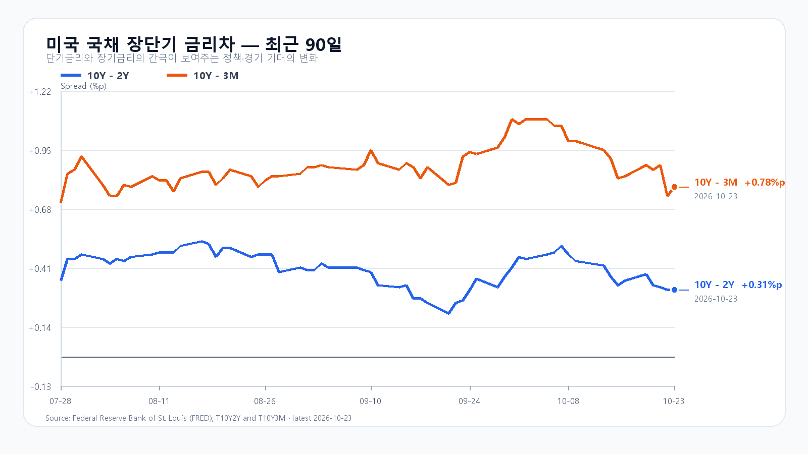
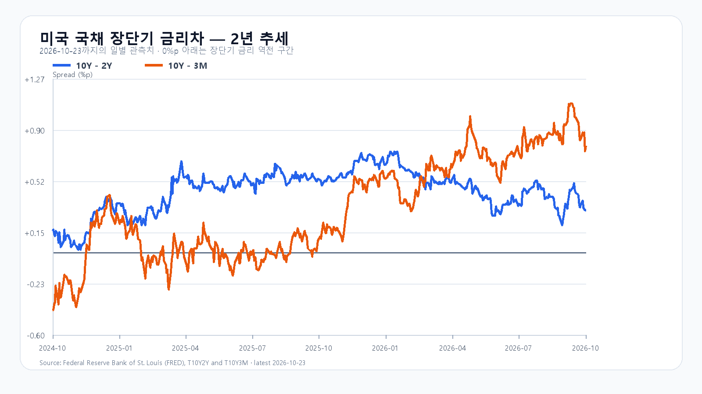

금요일 반도체주는 급락을 잠시 멈췄지만 회복 속도는 달랐습니다. 미국 23일 정규장에서 SOXX는 0.53%, SMH는 0.74% 올랐습니다. Micron과 AMD는 반등했지만 Nvidia와 Broadcom은 하락했습니다. 오늘 한국장은 업종 전체의 강한 반등을 기대하기보다 금요일 되찾은 가격을 지킬 수 있는지부터 확인해야 합니다.
낙폭을 줄인 반도체, 여전히 높은 자금 비용
Micron은 2.46%, AMD는 1.74% 올랐습니다. 반면 Nvidia는 0.59%, Broadcom은 0.48% 내렸습니다. QQQ는 0.01%, TQQQ는 0.20% 하락했습니다. 전날 급락을 되돌리는 힘이 일부 종목에 머물렀습니다. 미국 시세
미 재무부의 23일 금리는 2년물 4.69%, 10년물 5.00%입니다. 전날보다 각각 4bp 높습니다. 3개월물은 4.22%입니다. 이란을 둘러싼 긴장과 높은 유가는 기업 비용과 물가 부담을 키웁니다. AI 설비 주문이 늘더라도 높은 금리가 이어지면 투자금을 조달하고 회수하는 부담은 남습니다. 미 재무부
솔리다임은 IPO 검토를 멈췄지만 투자는 필요하다
SK하이닉스는 23일 솔리다임의 상장 전 자금 조달과 IPO 검토를 중단했다고 밝혔습니다. 시장 여건과 주가 흐름을 고려한 결정입니다. 회사는 미국 생산시설 확충과 성장 투자 필요성은 유지된다고 설명했습니다. 지분 희석 우려가 줄어드는 측면과 대체 자금 조달을 고민해야 하는 측면을 함께 봐야 합니다. SK하이닉스 발표
이 발표와 AI 투자비 부담은 금요일 한국장에서도 알려진 재료입니다. 국내 하락과 뒤이은 미국 움직임에 같은 악재를 다시 더해서는 안 됩니다. 오늘은 삼성전자·SK하이닉스 가격과 외국인 매수가 회복을 이어가는지가 관건입니다.
DDR5 가격 지지와 DDR4 약세가 갈린다
23일 대만시간 오후 6시 10분 기준 DDR5 16Gb 현물 평균은 61.267달러로 0.27% 올랐습니다. DDR4 16Gb는 82.87달러로 0.30% 내렸습니다. 메모리 전체의 수급을 하나의 방향으로 묶기 어렵습니다. 이 현물 가격을 HBM이나 서버 메모리 계약 단가로 넓혀 읽을 수도 없습니다. TrendForce
5,550선 회복이 하루짜리로 끝나는가
금요일 KOSPI는 5,403.17로 출발해 5,305.98까지 밀렸다가 당일 고점인 5,550.30으로 마쳤습니다. 종가는 0.30% 올랐지만 장중 진폭은 컸습니다. KODEX 레버리지도 61,145원까지 하락한 뒤 67,415원으로 회복했습니다. 종가 상승만으로 매도 압력이 사라졌다고 판단하기는 이릅니다.
오늘 기본 종가 범위는 5,400~5,600(50%)으로 봅니다. 외국인·프로그램 매수와 함께 5,600선을 넘기는 강세 범위는 5,600 초과~5,750(25%), 5,400선 아래에서 매도가 이어지는 약세 범위는 5,200~5,400 미만(25%)입니다. 5,600선 재이탈은 강세 판단을, 5,400선 회복은 약세 판단을 무효로 만듭니다. 범위를 벗어나는 변동도 가능합니다.
KODEX 레버리지는 금요일 시가 64,005원을 첫 지지, 종가 67,415원을 반등 유지 기준, 목요일 고점 72,300원을 저항으로 봅니다. 64,005원을 밑돌고 회복하지 못하면 반등 지속 판단을 접습니다. 금요일 저점 61,145원은 그 아래의 추가 확인선입니다.
이번 주는 FOMC와 실적, GDP·PCE가 겹친다
FOMC는 미국시간 27~28일 열립니다. Microsoft는 미국시간 28일, Amazon은 29일 실적을 발표할 예정입니다. AI 매출 증가가 설비 투자와 현금흐름 부담을 얼마나 감당하는지가 관심사입니다. 연준 일정 · Microsoft IR · Amazon 일정
한국시간 29일 오후 9시 30분에는 미국 3분기 GDP 속보치와 9월 개인소득·소비가 함께 발표됩니다. PCE 물가가 포함된 일정입니다. 주 초의 반등이 이 발표들을 앞둔 포지션 조정으로 흔들릴 수 있어 개장 직후와 오전 10시 이후의 매수 지속성을 나눠 볼 필요가 있습니다. BEA 발표 일정
장전 시세
| 항목 | 최근값 | 원천 시각 |
| 삼성전자 NXT (OPEN) | 217,000원 · 0.70% | 2026-10-26T08:05:24.94281+09:00 |
| SK하이닉스 NXT (OPEN) | 1,293,000원 · 1.25% | 2026-10-26T08:05:24.94282+09:00 |
| 하나은행 USD/KRW 고시 | 1,326.00원 | 2026-10-26T07:38:39+09:00 |
| NQF 최근 거래 | 29,304.25 | 2026-10-26T07:55:23+09:00 |
| ESF 최근 거래 | 7,689.75 | 2026-10-26T07:55:19+09:00 |
| CLF 최근 거래 | 102.06 | 2026-10-26T07:55:18+09:00 |
| BZF 최근 거래 | 110.62 | 2026-10-26T07:54:12+09:00 |
미국 시간외 최근 거래
| 종목 | USD | 종가 대비 | 원천 시각 |
| NVDA | 211.11 | +0.07% | 2026-10-24T08:59:55+09:00 |
| AMD | 516.80 | +0.00% | 2026-10-24T08:59:20+09:00 |
| MU | 879.90 | +0.27% | 2026-10-24T08:59:59+09:00 |
| AVGO | 322.23 | +0.17% | 2026-10-24T08:59:51+09:00 |
미국 정규장
| 종목 | 종가 USD | 등락 |
| QQQ | 704.40 | -0.01% |
| TQQQ | 66.29 | -0.20% |
| SOXX | 478.20 | +0.53% |
| SMH | 527.20 | +0.74% |
| NVDA | 210.96 | -0.59% |
| AMD | 516.79 | +1.74% |
| MU | 877.55 | +2.46% |
| AVGO | 321.68 | -0.48% |


SK하이닉스 솔리다임 발표 · SEC 6-K · DRAM 현물 · 미 재무부 · 미국 시세 · 국내 일봉 · FOMC · BEA 일정 · Microsoft IR · Amazon 실적 일정 · FRED 금리차